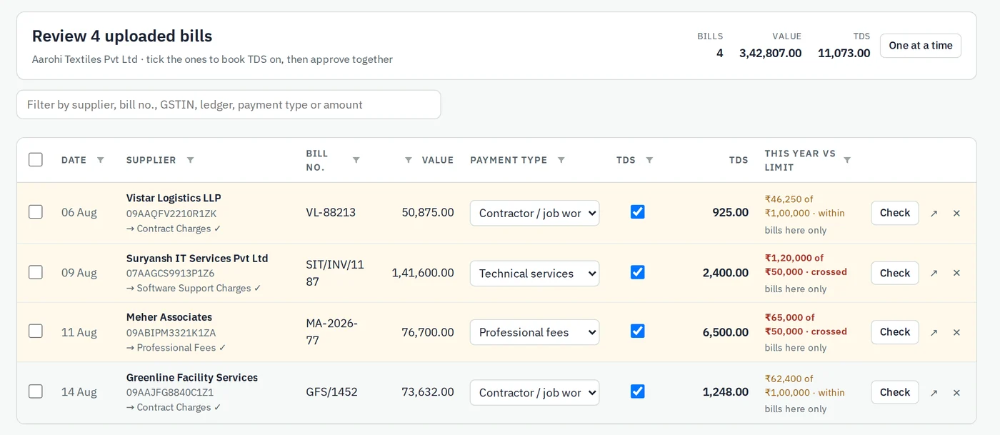
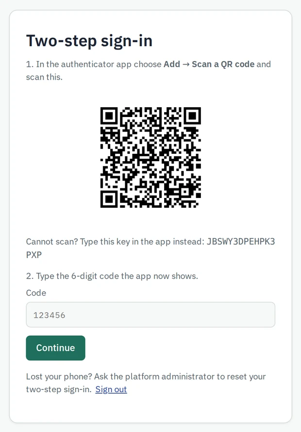

Review a month of bills in one table
Each bill shows its TDS section, the tax, and where the vendor stands against this year's limit. Approve them together.

Made by practising chartered accountants for the work their own office does every month.
Each bill shows its TDS section, the tax, and where the vendor stands against this year's limit. Approve them together.

PDF or Excel statements become receipts and payments, matched to your ledgers by rules you teach it once.
Bank and vendor ledgers checked against Tally. Every difference is listed, with one click to post or remove the entry.
GSTR-1, GSTR-3B and 2B matching, worked out from what is in Tally.
Checks on the books with the vouchers behind each finding, plus ageing, cash flow and ratios for the owner.
No re-typing. Your team checks, TDS Desk does the rest.
Drop bills and statements, or forward them from email. Printed bills are read on your own computer with free OCR.
Anything the reader is unsure of is marked. Confirm the payment type once per vendor and approve one bill or fifty.
The Tally Bridge sends the entries to TallyPrime on your computer, then reads them back and confirms the balance.
Security is enforced by the database and the server, not left to the screen.

Your last sign-in is shown each time you sign in. Add a code from your phone as a second step if you want it.
Signs out after 30 minutes without use, and ends the session on the server too.
Each firm's data is walled off by the database itself. One firm can never read another's.
Stored in India, in the Mumbai region, encrypted at rest and in transit.
A permanent audit trail of sign-ins, posts to Tally and deletions. It cannot be edited.
The Tally Bridge listens only on your own computer. Tally is never opened to the internet.
When you choose AI reading for a difficult bill, its image is sent to Anthropic or Google for reading only. Their terms do not allow it to be used for training.
Where we stand today, stated plainly.
Our information security management system is written against all 93 Annex A controls. The certification audit follows.
Independent testing by a CERT-In empanelled auditor. The summary report will be shared with clients on request.
Data used only for the work you ask for, deleted on request, and firms told without delay if anything goes wrong.
An incident process with reporting to CERT-In within 6 hours, and an audit trail kept for at least 180 days.
TDS Desk is not yet ISO 27001 certified. We will publish the certificate and the VAPT summary on this page when they are issued.